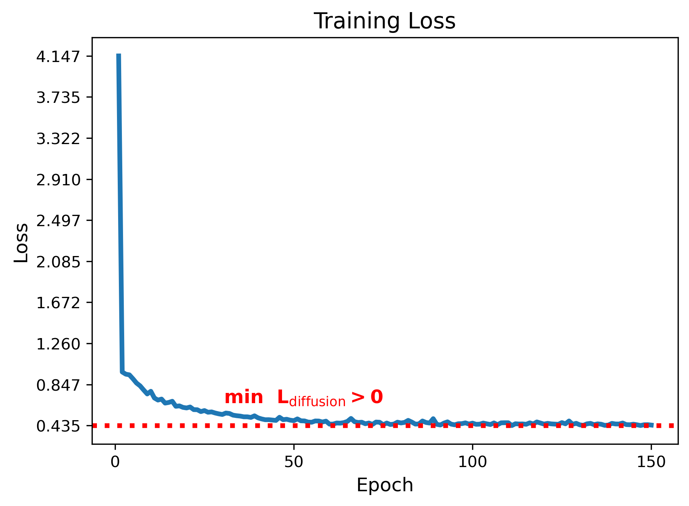

Optimal Solutions for Diffusion and Flow Matching Objectives
April 31, 2024
Diffusion and Flow matching are the state-of-the-art generative models for generating high-quality and diverse data in many domains (e.g., images, audio, video, graph, etc). From an optimization perspective, what makes them so appealing, compared to the previous state-of-the-art GAN based generative models, is that they have simple least squares minimization training objectives compared to the min-max optimization of GANs.
However, the presentation of the diffusion and flow matching objectives are sometimes oversimplified in blog articles and even published papers, mostly for the sake of brevity. This can be detrimental to the understanding of the models and can lead to wrong conclusion. For example, the least squares objective could convey the impression that the optimal objective value is zero [Eyring et al., 2024, Sec. 3.1]). For another example, the denoising diffusion model objective is often described as trying to estimate the noise in the noisy sample [HuggingFace Blogs 2022]. This may suggest that if the optimal solution to the objective were obtained (i.e., no optimization error), then removing the noise would result in a perfect reconstruction of the original sample. Hence no iterative/Langevin sampling is needed. However, this is not the case. The correct interpretation has a subtle but important difference: diffusion models estimates the the "expected" value of the noise given the noisy sample. Therefore, the estimated denoising direction is only correct for infitesimally small steps.
An important observation that stems from this understanding is that the objective value is not saturated (zero) at the optimal solution, in general. Rather, it is a positive quantity that depends upon the data distributions and the choice of some hyperparameters such as noise scale schedule. This implies that the absolute value of the objective in itself is not an informative quantity for hyperparamter tuning and convergence analysis.
In this blog post, we will carefully analyze the diffusion and flow matching objectives and provide a clearer perspective into the optimal solutions.
Notations
Both diffusion and flow matching fall under continuous normalizing flow based generative models [Lipman et al., 2023]. The main idea is to continuously morph a base distribution \(p_1\) to a target distribution \(p_0\). Diffusion models can be regarded as a special case of flow matching where the base distribution is a simple easy-to-sample distribution, such as a Gaussian, and the target distribution is the data distribution. Whereas in flow matching, both \(p_0\) and \(p_1\) are allowed to be data distributions (Note: We follow diffusion model notations where the goal is to transport samples from \(p_1\) to \(p_0\); generally, flow matching literature uses the reverse direction).
Diffusion Models
Diffusion models are characterized by a forward diffusion process where samples \(x_0 \sim p_0\) is degraded using the following diffusion process [Ho et al., 2020]:
\[ x_t = I(x_0, \epsilon, t) = \sqrt{\bar{\alpha}_t} x_0 + \sqrt{1-\bar{\alpha}_t} \epsilon, ~ \epsilon \sim \mathcal{N}(0, I), \tag{1}\]
where \(\bar{\alpha}_t, \bar{\alpha}_t \in (0, 1)\) represents the noise scale at time \(t\) (Note: here we consider variance preserving (VP) diffusion models), \(I(x_0, \epsilon, t)\) is an the interpolation between data sample \(x_0\) and noise \(\epsilon\) at time \(t\). Then the denoising diffusion objective is given by
\[ \mathcal{L}_{\text{diffusion}}(\theta) = \mathbb{E}_{x_0 \sim p_0, \epsilon \sim \mathcal{N}(0, I), t} \left[ \lambda(t)\left\| \epsilon - \epsilon_\theta(I(x_0, \epsilon, t), t) \right\|^2 \right], \tag{2} \]
where the coefficient \(\lambda(t)\) is a function of \(\bar{\alpha}_t\). For simplicity, we will assume \(\lambda(t) = 1\) for the rest of the blog post.
If we think of \(\epsilon_\theta(x_t, t)\) as estimating the noise in the noisy sample \(x_t\), one could arrive at the conclusion that \(\min_{\theta} \mathcal{L}_{\text{diffusion}}(\theta) = 0\) at the optimal solution. This is because, if the optimal solution is obtained, the estimated noise should be exactly the noise \(\epsilon\) that was added to the data sample \(x_0\) to produce \(x_t\). Therefore, removing the noise should result in a perfect reconstruction of the original data sample. However, this is not the case.
The reason is that there are many combinations of \(x_0\) and \(\epsilon\) that can produce the same \(x_t\). Therefore, intuitively, the optimal solution will be the average of all such \(\epsilon\). Precisely, the optimal solution is given by:
\[ \epsilon_\theta^*(x, t) = \mathbb{E}_{x_0 \sim p_0, \epsilon \sim \mathcal{N}(0, I)} \left[\epsilon ~|~ x = I(x_0, \epsilon, t) \right]. \tag{3} \]
Therefore, the optimal objective value is greater than zero in general. This also corroborates the fact that one cannot obtain clean sample \(x_0\) from \(x_t\) by simply removing the noise \(\epsilon_\theta^*(x_t, t)\). Instead, \(\epsilon_\theta^*(x_t, t)\) is simply an instantaneous direction to slightly nudge the noisy sample \(x_t\) towards the true data distribution \(p_0\).


Top: Diffusion from source to the target distribution. Bottom: Objective value during training.
Flow Matching
Flow matching (FM) aims at estimating a time-dependent vector field \(u_t\) that continuously morphs \(p_1\) to \(p_0\) tracing the probability path \(p_t, t \in [0, 1]\). The ideal flow matching objective is to regress over such a vector field.
\[
\min_{\theta} ~~\mathcal{L}_{\text{FM}}(\theta) = \mathbb{E}_{x_t \sim p_t} \left[ \left\| v_\theta(x_t, t) - u_t(x_t) \right\|^2 \right]. \tag{4}
\]
However, this ideal objective is intractable due to the unknown velocity field \(u_t\). Instead, FM considers the following conditional flow matching objective, which has the same minimizer as Eq. (4) [Lipman et al., 2023, Albergo et al., 2023, Liu et al., 2023]:
\[
\min_{\theta} ~~\mathcal{L}_{\text{CFM}}(\theta) = \mathbb{E}_{z \sim q(z), x_t \sim p_t(x_t|z)} \left[ \left\| v_\theta(x_t, t) - u_t(x_t|z) \right\|^2 \right], \tag{5}
\]
where \(u_t(x_t|z)\) is the conditional velocity field that traces the conditional probability path \(p_t(x_t|z)\) for a given \(z\).
For example, \(q(z)\) can be the joint distribution of \( x_0 \sim p_0, x_1 \sim p_1 \), and \(p_t(x_t|x_0, x_1)= \delta_{I(x_1, x_0, t)} (x_t)\), where \(\delta_y(x)\) is the dirac measure centered at \(y\), and \(I(x_1, x_0, t)\) be the so-called stochastic interpolant function [Albergo et al., 2023] (c.f. Eq. (1)) such that \(I(x_1, x_0, 0) = x_1\) and \(I(x_1, x_0, 1) = x_0\). This will imply that \(u_t(x_t|z) = u_t(x_t|x_0, x_1) = \frac{\partial}{\partial t} I(x_1, x_0, t)\) is the associated unique conditional vector field. Hence, the practical objective used throughout the FM literature is given by:
\[
\min_{\theta} ~~\mathcal{L}_{\text{CFM}}(\theta) = \mathbb{E}_{t, x_0 \sim p_0, x_1 \sim p_1 } \left[ \left\| v_\theta(I(x_1, x_0, t), t) - \frac{\partial}{\partial t} I(x_1, x_0, t) \right\|^2 \right]. \tag{6}
\]
The optimal solution of Eq. (6) is given by:
\[
v_\theta^*(x, t) = \mathbb{E}_{x_0 \sim p_0, x_1 \sim p_1} \left[ \frac{\partial}{\partial t} I(x_1, x_0, t) ~|~ x = I(x_1, x_0, t) \right]. \tag{7}
\]
Similar to the case of diffusion models, the optimal vector field at point \(x\) and time \(t\) is the average of the conditional vector field (derivative of the interpolant) over all choices of end points \(x_0\) and \(x_1\) such that the interpolant at time \(t\) has the value \(x\).
The optimal objective value is obtained by substituting the optimal vector field into Eq. (6). In general, this value is greater than zero.
References
[Eyring et al., 2024] Eyring, L., Klein, D., Uscidda, T., Palla, G., Kilbertus, N., Akata, Z., & Theis, F. (2024). Unbalancedness in Neural Monge Maps Improves Unpaired Domain Translation. arXiv preprint arXiv:2311.15100.
[HuggingFace Blogs 2022] https://huggingface.co/blog/annotated-diffusion
[Ho et al., 2020] Ho, J., Jain, A., & Abbeel, P. (2020). Denoising diffusion probabilistic models. Advances in neural information processing systems, 33, 6840-6851.
[Lipman et al., 2023] Lipman, Y., Chen, R. T., Ben-Hamu, H., Nickel, M., & Le, M. (2023). Flow matching for generative modeling. arXiv preprint arXiv:2210.02747.
[Chen et al., 2018] Chen, R. T., Rubanova, Y., Bettencourt, J., & Duvenaud, D. K. (2018). Neural ordinary differential equations. Advances in neural information processing systems, 31.
[Albergo et al., 2023] Albergo, M. S., & Vanden-Eijnden, E. (2023). Building normalizing flows with stochastic interpolants. arXiv preprint arXiv:2209.15571.
[Liu et al., 2023] Liu, X., Gong, C., & Liu, Q. (2023). Flow straight and fast: Learning to generate and transfer data with rectified flow. arXiv preprint arXiv:2209.03003.